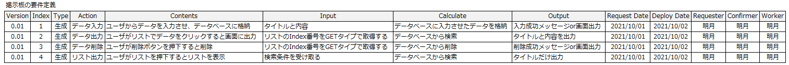

[Project design] 要件定義(要求事項整理)
こんにちは。明月です。
この投稿は要件定義(要求事項整理)に関する説明です。
要件定義はプログラムの工程に関係せずにどのプロジェクトでも必ず整理しなければならない段階です。要件定義というのはプログラムをなぜ作るか、どのところで活用するか、どのプログラムを作るかを定義することの意味です。
プログラムというのはどのデータや情報を収集してそれをどのように出力することや統計、算出数値を計算することがほとんどです。ほとんどというのはプログラムがデータ収集だけではなく、便利性のためのバッチプログラム、人ができない仕事を代わりにやるロボットや機械をコントロールするためのプログラムも存在します。しかし、私の場合は主なプロジェクトがウェブプログラムだし、ウェブプログラムは普通にデータを収集、掲示の目的が多いです。
ウェブプログラムというのはもっと詳しく説明すると、普通のプログラム流れが申請や要請などのページでデータを入力するとユーザやプログラムによりデータが収集、加工になり、データが算出して最終的にウェブページにテーブルや統計グラフなどを通って表示することが一般的です。
もちろん、特殊な要請事項により申請や要請は省略してボットや収集、検索プログラムによりデータが自動に生成してウェブにデータ結果が表示する流れも多いです。
この流れでみると、ウェブプログラムの要件定義の構造はInput -> Calculate -> Outputの流れで定義されます。

上の例は私が簡単に作成した要件定義表です。実務にはもっと詳細な内容がありますが、機能的にInput、Calculate、Outputの内容があれば、次の段階の設計をするときにどの内容が重要か、コーディングとUnitテストの区分とシナリオテストのアクションのタイプを定義する時に明確になります。
上の構造は個人的に私はこのようにすればやりやすかったと意味で、その方法が必ず正解ということではないので、ただ参考だけしたら良いです。
要件定義の構造を考え終わったら誰からの要件定義かを考えなければならないです。
普通のプログラムは自分が必要から作る場合もありますが、実務は誰からプログラムの開発要請がある場合が多いです。その要請がお客様がなることもあるし、現場の上司や他部署の仲間から必要により開発要請がある場合もあります。
要請の種類は様々ですが、形態はほぼ似てます。
まず、要請者のタイプには管理者がいます。この管理者はプログラムのすべての権限を持っている管理者だし、特にデータが整理された統計や最終的なデータを確認するユーザです。
そして一般ユーザがいます。一般ユーザは権限により閲覧するデータが限定になり、ほとんどデータを入力するユーザです。
次は運用者(オファーレター)がいます。運用者は実際にプログラムの重要トランザクションデータを扱うユーザではなく、マスタデータ、コード追加、管理するユーザです。
最後に開発者がいます。この開発者は私がなれるし、プロジェクトが終わったら引継ぎするユーザになります。環境設定ファイルやシステムファイルを管理するユーザです。
各の要請者のタイプによりプログラムを考える立場が違うし望む要求事項が違います。
つまり、要件定義する時には要請者のタイプを考えて要件定義を構成するほうが良いです。
データのタイプにより要件定義です。
業務によりデータタイプは全然別ですが、普通は一つの大きいデータを置いてデータ追加、修正などを通って完成になるデータが一般的です。
例えば、我々が図書館で本を貸出、管理するプログラムを作成すると考えましょう。
最初に本を借りる時に貸出というデータが生成されます。我々はそれをメインオブジェクト(Main entity)と言いましょう。
まず、誰かが本を借りようと思ってパソコンの前で申請ボタンを押したら最初のメインオブジェクト(Main entity)が作成されます。
このメインオブジェクト(Main entity)はお客様の情報を連結するし、どの本を借りるかの本データ、貸出日付を入れて最終に返却日付まで計算してデータを追加します。
そしてこのメインオブジェクト(Main entity)は貸出担当者に移動して担当者が追加内容を入れて承認というデータを追加します。
その後、またこのメインオブジェクト(Main entity)を通って最初に作成したユーザに承認という情報を知らせて、データのスケジュールや他のプログラムなどにデータを移動します。
また、スケジュールによりこのメインオブジェクト(Main entity)は返却日付が近くになると該当なユーザにメッセージやメールなどを通って返却要請をします。
そしてユーザが返却するためにメインオブジェクト(Main entity)に返却ボタンを押すと返却担当者に移動します。そして返却担当者が本を確認して返却完了してメインオブジェクト(Main entity)をLogに移動します。
上の例はメインオブジェクト(Main entity)というのは最初にユーザから生成して途中で業務によりデータ追加、連結をして終わったらデータが終了になる流れです。
つまり、どの業務でもこのメインオブジェクト(Main entity)が必ず存在します。まずそのメインデータを把握して次に追加するデータが何か連結するデータが何かを考えながら要件定義を作成することになります。
そしてこのデータをどの流れで作成するかを要件定義を作成します。
要件定義は実は必ずこのようにしなければならないですというのはありません。実務の業務により要件定義のフォーマットがすごく差異があります。
でも、私の場合は上の三つのパターンInput、Calculate、Outputの要件構造、要請者タイプ、データの構造を分離して考えればほぼ要件定義は整理ができます。
何かのもっと良いアイデアあればコメントをお願いします。
ここまで要件定義(要求事項整理)に関する説明でした。
ご不明なところや間違いところがあればコメントしてください。
- [Project design] プログラム最終テスト - ST(System test(Standard, Scenario))2021/10/26 19:10:07
- [Project design] プログラム結合テスト - IT(Integration test)2021/10/25 20:12:17
- [Project design] プログラム検証とテスト - Unitテスト2021/10/22 19:34:09
- [Project design] プログラム制作(コーディング) - クラス作成方法2021/10/20 19:28:09
- [Project design] プログラム制作(コーディング) - 関数作成方法2021/10/19 21:01:32
- [Project design] 詳細設計(インターフェース設計と抽象化作業)2021/10/18 18:23:15
- [Project design] 基本設計(画面設計とDB設計)2021/10/17 21:21:11
- [Project design] 要件定義(要求事項整理)2021/10/15 19:28:58
- [Project design] プロジェクトを工程(ウォーターフォール vs アジャイル)2021/10/14 18:36:04
- [Design pattern] 3-3. コマンドパターン(Command pattern)2021/11/05 17:01:42
- [Window] apache-tomcatでロードバランシング(Load balancing)する方法とセッションクラスタリング（セッション共有）2021/11/05 16:58:45
- [Window] Apacheでmod_jkとmod_proxyの差異、apacheでtomcatのwebsocketのプロキシフォーワードする方法2021/11/05 16:55:05
- [PHP] Apache環境の同じホスト中でPHPとJava(Servlet)を同時に起動、運用する方法2021/11/05 16:52:04
- [C#] 61. ウィンドウフォーム(Window form)でスレッド(Thread)を使い方、クロススレッド問題解決2021/11/04 19:29:51
- [Design pattern] 3-2. 責任の連鎖パターン(Chain of responsibility pattern)2021/11/04 19:27:58
- [Design pattern] 3-1. ストラテジーパターン(Strategy pattern)2021/11/03 18:38:52
- [C#] 60. ウィンドウフォーム(Window form)のイベント設定する方法2021/11/02 21:18:08
- [Design pattern] 2-7. ファサードパターン(Facade pattern)2021/11/02 19:32:31
- [Design pattern] 2-6. プロキシパターン(Proxy pattern)2021/11/01 19:42:44
- [Design pattern] 2-5. フライウェイトパターン(Flyweight pattern)2021/10/29 19:48:27
- [C#] 59. ウィンドウフォーム(Window form)にコントロール(Control)を使い方法2021/10/29 19:45:43
- [Design pattern] 2-4. デコレーターパターン(Decorator pattern)2021/10/28 20:11:13
- [C#] 58. ウィンドウフォーム(Window form)を作成する方法、そしてウィンドウメッセージとキュー2021/10/27 20:35:44
- [Design pattern] 2-3. ブリッジパターン(Bridge pattern)2021/10/27 20:32:21